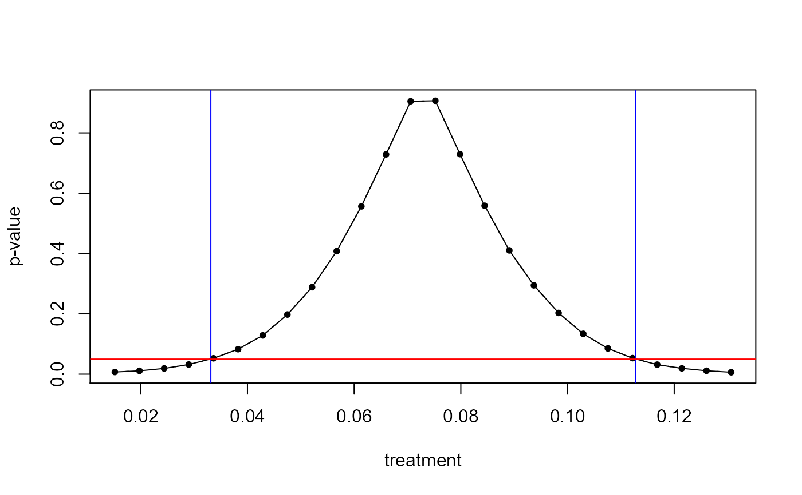

R/boottest_felm.R
boottest.felm.Rdboottest.felm is a S3 method that allows for fast wild cluster
bootstrap inference for objects of class felm by implementing
the fast wild bootstrap algorithm developed in Roodman et al., 2019.
# S3 method for felm boottest( object, param, B, clustid, bootcluster = "max", fe = NULL, conf_int = NULL, seed = NULL, beta0 = 0, sign_level = NULL, type = "rademacher", impose_null = TRUE, p_val_type = "two-tailed", tol = 1e-06, maxiter = 10, na_omit = TRUE, nthreads = getBoottest_nthreads(), ... )
| object | An object of class fixest |
|---|---|
| param | Character vector of length one. The name of the regression coefficient for which the hypothesis is to be tested |
| B | Integer. number of bootstrap iterations |
| clustid | A vector with the clusters |
| bootcluster | A character vector. Sets the cluster used in the bootstrap dgp. Chooses the largest cluster by default |
| fe | A character vector of length one. Fixed effect to be projected out in the bootstrap. Note: if regression weights are used, fe needs to be NULL. |
| conf_int | A logical vector. If TRUE, boottest computes confidence intervals by p-value inversion. If FALSE, only the p-value is returned. |
| seed | An integer. Allows the user to set a random seed |
| beta0 | A numeric. Shifts the null hypothesis H0: param = beta0 vs H1: param != beta0 |
| sign_level | A numeric between 0 and 1. E.g. sign_level = 0.05 returns 0.95% confidence intervals. By default, sign_level = 0.05. |
| type | character or function. The character string specifies the type of boostrap to use: One of "rademacher", "mammen", "norm" and "webb". Alternatively, type can be a function(n) for drawing wild bootstrap factors. "rademacher" by default. |
| impose_null | Logical. Controls if the null hypothesis is imposed on
the bootstrap dgp or not. Null imposed |
| p_val_type | Character vector of length 1. Type of p-value. By default "two-tailed". Other options: "equal-tailed" |
| tol | Numeric vector of length 1. The desired accuracy (convergence tolerance) for confidence interval inversion. 1e-6 by default. |
| maxiter | Integer. Maximum number of iterations for confidence interval inversion. 10 by default. |
| na_omit | Logical. If TRUE, |
| nthreads | The number of threads. Can be: a) an integer lower than, or equal to, the maximum number of threads; b) 0: meaning all available threads will be used; c) a number strictly between 0 and 1 which represents the fraction of all threads to use. The default is to use 1 core. |
| ... | Further arguments passed to or from other methods. |
An object of class boottest
The bootstrap p-value.
The bootstrap t-statistic.
The bootstrap confidence interval.
The tested parameter.
Sample size. Might differ from the regression sample size if the cluster variables contain NA values.
Number of Bootstrap Iterations.
Names of the cluster Variables.
Dimension of the cluster variables as used in boottest.
Significance level used in boottest.
Distribution of the bootstrap weights.
All p-values calculated while calculating the confidence interval.
All t-statistics calculated while calculating the confidence interval.
The regression object used in boottest.
Function call of boottest.
boottest computes confidence intervals by inverting p-values.
In practice, the following procedure is used:
Based on an initial guess for starting values, calculate p-values for 26 equal spaced points between the starting values.
Out of the 26 calculated p-values, find the two pairs of values x for which the corresponding p-values px cross the significance level sign_level.
Feed the two pairs of x into an numerical root finding procedure and
solve for the root. boottest currently relies on
stats::uniroot and sets an absolute tolerance of 1e-06 and
stops the procedure after 10 iterations.
boottest does not calculate standard errors.
Roodman et al., 2019, "Fast and wild: Bootstrap inference in STATA using boottest", The STATA Journal. (https://journals.sagepub.com/doi/full/10.1177/1536867X19830877)
#>data(voters) felm_fit <- felm(proposition_vote ~ treatment + ideology1 + log_income | Q1_immigration, data = voters) boot1 <- boottest(felm_fit, B = 9999, param = "treatment", clustid = "group_id1") boot2 <- boottest(felm_fit, B = 9999, param = "treatment", clustid = c("group_id1", "group_id2")) boot3 <- boottest(felm_fit, B = 9999, param = "treatment", clustid = c("group_id1", "group_id2"), fe = "Q1_immigration") boot4 <- boottest(felm_fit, B = 999, param = "treatment", clustid = c("group_id1", "group_id2"), fe = "Q1_immigration", sign_level = 0.2, seed = 8, beta0 = 2) summary(boot1)#> boottest.felm(object = felm_fit, param = "treatment", B = 9999, #> clustid = "group_id1") #> #> Observations: 300 #> Bootstr. Iter: 9999 #> Bootstr. Type: rademacher #> Clustering: 1-way #> Confidence Sets: 95% #> Number of Clusters: 40 #>#> term estimate statistic p.value conf.low conf.high #> 1 treatment 0.073 3.786 0.001 0.033 0.113